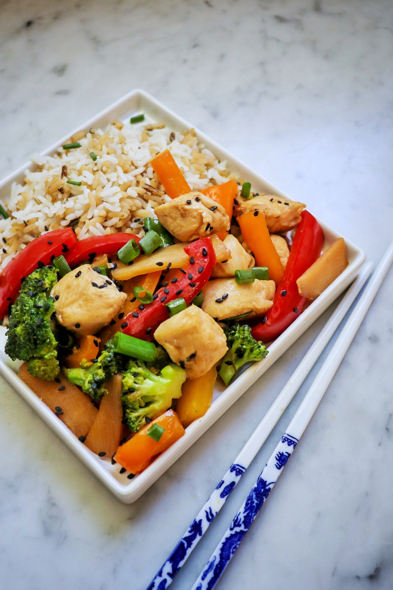

Stir Fry

Description
Stir-frying is a fast and fresh way to cook. Simply toss and turn bite-sized pieces of food in a little hot oil in a wok over high heat, and in five minutes or less, the work is done. Vegetables emerge crisp and bright. Meats are flavorful, tender, and well seared.
Ingredients
- 1/2 cup low-sodium soy sauce
- 1/2 medium orange, juiced
- 2 teaspoons sesame oil
- 2 teaspoons stevia powder
- 1/2 teaspoon garlic powder
- 1/8 teaspoon ground ginger
- 1 tablespoon vegetable oil
- 2 8oz skinless boneless chicken breasts chopped up
- 3 cloves garlic minced
- 1 cup broccoli florets
- 1/2 cup canned banboo shoots drained
- 1/2 cup chopped red bell pepper
- 1/2 cup chopped yellow bell pepper
- 1/2 cup chopped orange bell pepper
- 1/2 cup chopped green onion
- 1 tablesppon black sesame seeds
- 1 cup cooked long-grain white rice
- 1 cup cooked wild rice
Steps
- Combine soy sauce, orange juice, sesame oil, stevia powder, garlic powder, and ginger for teriyaki dressing in a small saucepan. Bring to a boil over medium-high heat, stirring constantly; continue cooking until the mixture thickens slightly. Remove and set aside.
- Heat a large skillet over medium-high heat. Add vegetable oil and heat until shimmering, 1 to 2 minutes. Add chicken and garlic; stir-fry for 2 to 3 minutes. Add broccoli and continue to stir-fry, 4 to 6 minutes. Add bamboo shoots and bell peppers; cook for an additional 4 to 6 minutes.
- Carefully pour the teriyaki dressing into the skillet (watch for splattering); cook until chicken is no longer pink in the center and juices run clear, and the vegetables are tender, about 5 minutes more.
- Remove from heat and stir in green onion and sesame seeds, reserving some of each for garnish. Serve immediately over cooked white and wild rice with the reserved green onions and sesame seeds.